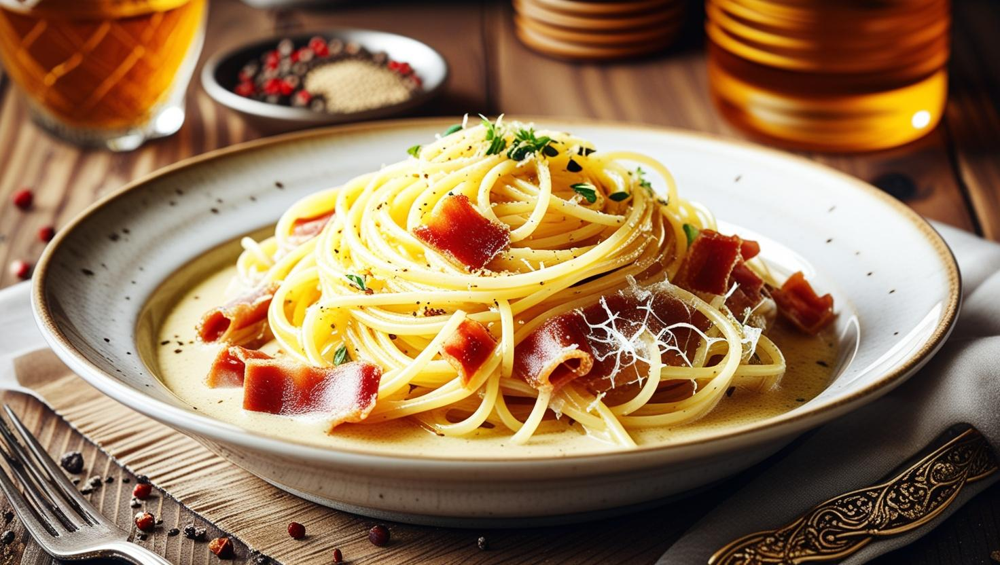

Spaghetti Carbonara

Description:
Spaghetti Carbonara is a creamy, savory pasta dish originating from Italy. Made with al dente spaghetti, crispy pancetta, and a luscious sauce of eggs, Parmesan, and a touch of black pepper, this dish is simple yet packed with flavor.
Perfect for quick weeknight dinners or elegant gatherings, its rich taste and silky texture make it a timeless classic that’s loved by all.
Ingredients:
- 400g spaghetti
- 150g pancetta or bacon, diced
- 3 large eggs
- 1 cup grated Parmesan cheese
- 2 garlic cloves, minced (optional)
- Salt and freshly ground black pepper to taste
- 2 tablespoons olive oil
- Fresh parsley for garnish (optional)
Steps:
- Cook the spaghetti in a large pot of salted boiling water until al dente. Reserve 1 cup of pasta water before draining.
- In a pan, heat olive oil and cook the pancetta until crispy. Add garlic if desired and sauté briefly.
- In a bowl, whisk together eggs, Parmesan, and a pinch of black pepper.
- Add the cooked spaghetti to the pan with the pancetta, tossing to coat.
- Remove the pan from heat and quickly mix in the egg mixture, adding reserved pasta water as needed to create a creamy sauce.
- Serve immediately, garnished with fresh parsley and additional Parmesan if desired.
Homepage